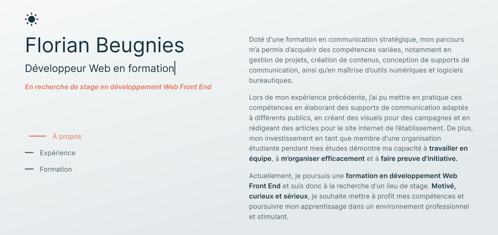

Formation Front-end · 2025-2026
CV Website
Curriculum Vitae et portfolio numérique.

Contexte
Premier projet entamé dans le cadre de ma formation de développeur web, j'ai développé un site web professionnel pour présenter mon curriculum vitae et mes projets.
L'objectif était de créer un espace numérique pour présenter mes compétences, mon parcours et mes réalisations de manière professionnelle et attrayante.
Démarche
J'ai pris en charge l'ensemble du processus de développement : conception des maquettes, mise en page et développement du site web. L'objectif étant d'appliquer les concepts appris durant ma formation tout en expérimentant de manière autonome.
La conception des maquettes a été réalisée avec Figma, avant de passer à la mise en page et au codage du site web dans VS Code.
Envie de voir le projet en entier ?
Voir le projet complet (GitHub)